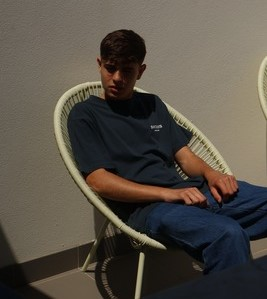
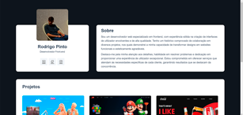
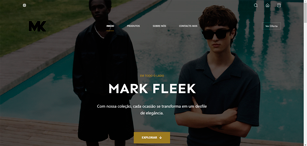

Rodrigo Pinto
Sobre mim
Sou um desenvolvedor web especializado em frontend, com experiência sólida na criação de interfaces de utilizador envolventes e de alta qualidade. Tenho um histórico comprovado de colaboração em diversos projetos, nos quais demonstrei a minha capacidade de transformar designs em websites funcionais e esteticamente agradáveis. Destaco-me pela minha atenção aos detalhes, habilidade em resolver problemas e dedicação em proporcionar uma experiência de utilizador excepcional. Estou comprometido em oferecer serviços que atendam às necessidades específicas de cada cliente, garantindo resultados que se destacam da concorrência.
Hobbies
Meus hobbies são os estudos e explorar novos conhecimentos, além de relaxar a assistir vídeos que despertam o meu interesse e curiosidade.
Projetos
-
Loja de Roupa Online
Tecnologias utilizadas: HTML / CSS / JS
-
Portfolio
Tecnologias utilizadas: HTML / CSS / JS / JSON
 -
Casa Antiga Restaurante
Tecnologias utilizadas: HTML / CSS / JS / PHP
- HTML
- CSS
- JavaScript
- PHP
- C#
- Python
- Json
Loja de Roupa Online
Tecnologias utilizadas: WORDPRESS
| Id | Projetos | Objetivo | Tecnologias | Dificuldades |
|---|---|---|---|---|
| 1 | Casa Antiga | PAP | HTML / CSS / JAVASCRIPT / LARAVEL / JSON | Design do WebSite |
| 2 | MarkFleek | Trabalho PSI | HTML / CSS / JAVASCRIPT / JSON | Fazer o LightMode e o DarkMode |
| 3 | MarkFleek | Trabalho PSI | WORDPRESS | Aprender a lidar com o elementor no incio |